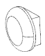

<!DOCTYPE html>
<html lang="en" class="no-js">
  <head>
    
      <meta charset="utf-8">
      <meta name="viewport" content="width=device-width,initial-scale=1">
      <meta http-equiv="x-ua-compatible" content="ie=edge">
      
      
      
      
        <meta name="lang:clipboard.copy" content="Copy to clipboard">
      
        <meta name="lang:clipboard.copied" content="Copied to clipboard">
      
        <meta name="lang:search.language" content="en">
      
        <meta name="lang:search.pipeline.stopwords" content="True">
      
        <meta name="lang:search.pipeline.trimmer" content="True">
      
        <meta name="lang:search.result.none" content="No matching documents">
      
        <meta name="lang:search.result.one" content="1 matching document">
      
        <meta name="lang:search.result.other" content="# matching documents">
      
        <meta name="lang:search.tokenizer" content="[\s\-]+">
      
      <link rel="shortcut icon" href="../../../assets/images/favicon.png">
      <meta name="generator" content="mkdocs-1.0.4, mkdocs-material-3.0.6">
    
    
      
        <title>Pan & Tilt Unit - Makerfactory Documentation</title>
      
    
    
      <link rel="stylesheet" href="../../../assets/stylesheets/application.451f80e5.css">
      
      
    
    
      <script src="../../../assets/javascripts/modernizr.1aa3b519.js"></script>
    
    
  <link href="https://fonts.googleapis.com/css?family=Rajdhani:400,600" rel="stylesheet">

    <link rel="stylesheet" href="../../../assets/fonts/material-icons.css">
    
      <link rel="stylesheet" href="../../../assets/css/font.css">
    
      <link rel="stylesheet" href="../../../assets/css/links.css">
    
      <link rel="stylesheet" href="../../../assets/css/header.css">
    
      <link rel="stylesheet" href="../../../assets/css/search.css">
    
      <link rel="stylesheet" href="../../../assets/css/sidebars.css">
    
      <link rel="stylesheet" href="../../../assets/css/footer.css">
    
      <link rel="stylesheet" href="../../../assets/css/dropdown.css">
    
      <link rel="stylesheet" href="../../../assets/css/nav.css">
    
      <link rel="stylesheet" href="../../../assets/css/extra.css">
    
      <link rel="stylesheet" href="../../../assets/css/float.css">
    
      <link rel="stylesheet" href="../../../assets/css/layout.css">
    
      <link rel="stylesheet" href="../../../assets/css/images.css">
    
    
  </head>
  
    <body dir="ltr">
  
    <svg class="md-svg">
      <defs>
        
        
      </defs>
    </svg>
    <input class="md-toggle" data-md-toggle="drawer" type="checkbox" id="__drawer" autocomplete="off">
    <input class="md-toggle" data-md-toggle="search" type="checkbox" id="__search" autocomplete="off">
    <label class="md-overlay" data-md-component="overlay" for="__drawer"></label>
    
      <a href="#pan-unit" tabindex="1" class="md-skip">
        Skip to content
      </a>
    
    
      <header class="md-header" data-md-component="header">

  <!-- Top-level navigation -->
  <nav class="md-header-nav md-grid">
    <div class="md-flex">
      <!-- Button to toggle drawer -->
      <div class="md-flex__cell md-flex__cell--shrink">
        <label class="md-icon md-icon--menu md-header-nav__button"
            for="__drawer"></label>
      </div>

      <!-- Link to home -->
      <div class="md-flex__cell md-flex__cell--shrink">
        <a href="../../.."
            title="Makerfactory Documentation"
            class="md-header-nav__button md-logo">
          
        </a>
      </div>

      
        <div class="md-flex__cell md-flex__cell--shrink">
          <div class="dropdown">
            <div class="selected-item">
              
                
              
                
              
                
                  <u>Educational</u>
                
              
                
              

              <i class="md-icon">keyboard_arrow_down</i>
            </div>
            <ul>
              
                <li>
                  
                  
                    <a href="../../..">
                      
                        Overview
                      
                    </a>
                  
                </li>
              
                <li>
                  
                  
                    
                      
                    

                    <div href="../../../development-boards/esp32/" class="mute">
                      Development
                    </div>
                    
                    
                    
                      
                      

                      
                        
                          

                          
                        
                          

                          
                        
                          

                          
                        
                          

                          
                        
                      

                      <a href="../../../development-boards/esp32/">
                        
                          ESP32
                        
                      </a>
                    
                      
                      

                      
                        
                          

                          
                            
                          
                        
                          

                          
                        
                          

                          
                        
                          

                          
                        
                      

                      <a href="../../../m5stack/overview/">
                        
                          M5STACK
                        
                      </a>
                    
                  
                </li>
              
                <li>
                  
                  
                    
                      
                    

                    <div href="../../.." class="mute">
                      Educational
                    </div>
                    
                    
                    
                      
                      

                      
                        
                          

                          
                            
                          
                        
                          

                          
                        
                          

                          
                        
                          

                          
                        
                      

                      <a href="../introduction/">
                        
                          <span class="selected">
                              Robobug Hexapod
                          </span>
                        
                      </a>
                    
                      
                      

                      
                        
                          

                          
                        
                          

                          
                        
                          

                          
                        
                          

                          
                        
                      

                      <a href="../../../educational/raspberry/overview/">
                        
                          Raspberry Learning Package
                        
                      </a>
                    
                  
                </li>
              
                <li>
                  
                  
                    
                      
                    

                    <div href="../../../tec-egg/overview/" class="mute">
                      Kits
                    </div>
                    
                    
                    
                      
                      

                      
                        
                          

                          
                        
                          

                          
                        
                          

                          
                        
                          

                          
                        
                      

                      <a href="../../../tec-egg/overview/">
                        
                          Tec-Egg
                        
                      </a>
                    
                  
                </li>
              
            </ul>
          </div>
        </div>
      

      <!-- Header title -->
      <div class="md-flex__cell md-flex__cell--stretch">
        <div class="md-flex__ellipsis md-header-nav__title"
            data-md-component="title">
          
            
              <span class="md-header-nav__topic">
                Makerfactory Documentation
              </span>
              <span class="md-header-nav__topic">
                Pan & Tilt Unit
              </span>
            
          
        </div>
      </div>

      <!-- Button to open search dialogue -->
      <div class="md-flex__cell md-flex__cell--shrink">
        
          
            <label class="md-icon md-icon--search md-header-nav__button"
                for="__search"></label>

            <!-- Search interface -->
            
<div class="md-search" data-md-component="search" role="dialog">
  <label class="md-search__overlay" for="__search"></label>
  <div class="md-search__inner" role="search">
    <form class="md-search__form" name="search">
      <input type="text" class="md-search__input" name="query" placeholder="Search" autocapitalize="off" autocorrect="off" autocomplete="off" spellcheck="false" data-md-component="query" data-md-state="active">
      <label class="md-icon md-search__icon" for="__search"></label>
      <button type="reset" class="md-icon md-search__icon" data-md-component="reset" tabindex="-1">
        &#xE5CD;
      </button>
    </form>
    <div class="md-search__output">
      <div class="md-search__scrollwrap" data-md-scrollfix>
        <div class="md-search-result" data-md-component="result">
          <div class="md-search-result__meta">
            Type to start searching
          </div>
          <ol class="md-search-result__list"></ol>
        </div>
      </div>
    </div>
  </div>
</div>
          
        
      </div>

      <!-- Repository containing source -->
      
    </div>
  </nav>
</header>
    
    <div class="md-container">
      
        
      
      
      <main class="md-main">
        <div class="md-main__inner md-grid" data-md-component="container">
          
            
              <div class="md-sidebar md-sidebar--primary" data-md-component="navigation">
                <div class="md-sidebar__scrollwrap">
                  <div class="md-sidebar__inner">
                    <nav class="md-nav md-nav--primary" data-md-level="0">
  <label class="md-nav__title md-nav__title--site" for="__drawer">
    <a href="../../.." title="Makerfactory Documentation" class="md-nav__button md-logo">
      
        
      
    </a>

    
      
    
      
    
      
        Chapters
      
    
      
    
  </label>
  
  <ul class="md-nav__list" data-md-scrollfix>
    
      

      
    
      

      
    
      

      
        
          
          
          

  


  <li class="md-nav__item md-nav__item--active md-nav__item--nested">
    
      <input class="md-toggle md-nav__toggle" data-md-toggle="nav-3-1" type="checkbox" id="nav-3-1" checked>
    
    <label class="md-nav__link" for="nav-3-1">
      Robobug Hexapod
    </label>
    <nav class="md-nav" data-md-component="collapsible" data-md-level="1">
      <label class="md-nav__title" for="nav-3-1">
        Robobug Hexapod
      </label>
      <ul class="md-nav__list" data-md-scrollfix>
        
        
          
          
          

  


  <li class="md-nav__item md-nav__item--active md-nav__item--nested">
    
      <input class="md-toggle md-nav__toggle" data-md-toggle="nav-3-1-1" type="checkbox" id="nav-3-1-1" checked>
    
    <label class="md-nav__link" for="nav-3-1-1">
      Manual
    </label>
    <nav class="md-nav" data-md-component="collapsible" data-md-level="2">
      <label class="md-nav__title" for="nav-3-1-1">
        Manual
      </label>
      <ul class="md-nav__list" data-md-scrollfix>
        
        
          
          
          


  <li class="md-nav__item">
    <a href="../introduction/" title="Introduction" class="md-nav__link">
      Introduction
    </a>
  </li>

        
          
          
          


  <li class="md-nav__item">
    <a href="../explanation_of_symbols/" title="Explanation of symbols" class="md-nav__link">
      Explanation of symbols
    </a>
  </li>

        
          
          
          


  <li class="md-nav__item">
    <a href="../intended_use/" title="Intended Use" class="md-nav__link">
      Intended Use
    </a>
  </li>

        
          
          
          


  <li class="md-nav__item">
    <a href="../construction_video/" title="Construction Video" class="md-nav__link">
      Construction Video
    </a>
  </li>

        
          
          
          


  <li class="md-nav__item">
    <a href="../package_contents/" title="Package Contents" class="md-nav__link">
      Package Contents
    </a>
  </li>

        
          
          
          


  <li class="md-nav__item">
    <a href="../quick-start/" title="Quick start" class="md-nav__link">
      Quick start
    </a>
  </li>

        
          
          
          


  <li class="md-nav__item">
    <a href="../safety_instructions/" title="Safety Instructions" class="md-nav__link">
      Safety Instructions
    </a>
  </li>

        
          
          
          


  <li class="md-nav__item">
    <a href="../required_accessories/" title="Required accessories" class="md-nav__link">
      Required accessories
    </a>
  </li>

        
          
          
          


  <li class="md-nav__item">
    <a href="../general_notes/" title="General notes" class="md-nav__link">
      General notes
    </a>
  </li>

        
          
          
          


  <li class="md-nav__item">
    <a href="../preparatory-work/" title="Preparatory work" class="md-nav__link">
      Preparatory work
    </a>
  </li>

        
          
          
          


  <li class="md-nav__item">
    <a href="../test-firmware-installation/" title="Test firmware installation" class="md-nav__link">
      Test firmware installation
    </a>
  </li>

        
          
          
          


  <li class="md-nav__item">
    <a href="../preparing-the-leg-servos/" title="Preparing the leg servos" class="md-nav__link">
      Preparing the leg servos
    </a>
  </li>

        
          
          
          


  <li class="md-nav__item">
    <a href="../assembling-the-mechanical-parts/" title="Assembling the mechanical parts" class="md-nav__link">
      Assembling the mechanical parts
    </a>
  </li>

        
          
          
          


  <li class="md-nav__item">
    <a href="../transferring-the-firmware/" title="Transferring the firmware" class="md-nav__link">
      Transferring the firmware
    </a>
  </li>

        
          
          
          


  <li class="md-nav__item">
    <a href="../controlling-with-the-gamepad/" title="Controlling with the Gamepad" class="md-nav__link">
      Controlling with the Gamepad
    </a>
  </li>

        
          
          
          


  <li class="md-nav__item">
    <a href="../calibrate-legs/" title="Calibrate legs" class="md-nav__link">
      Calibrate legs
    </a>
  </li>

        
          
          
          


  <li class="md-nav__item">
    <a href="../using_user_boards/" title="Using user boards" class="md-nav__link">
      Using user boards
    </a>
  </li>

        
          
          
          


  <li class="md-nav__item">
    <a href="../demo_programs/" title="Demo programs" class="md-nav__link">
      Demo programs
    </a>
  </li>

        
          
          
          


  <li class="md-nav__item">
    <a href="../Overview_of_the_connections_and_components/" title="Overview of the connections and components" class="md-nav__link">
      Overview of the connections and components
    </a>
  </li>

        
          
          
          


  <li class="md-nav__item">
    <a href="../schematic_system_overview/" title="Schematic system overview" class="md-nav__link">
      Schematic system overview
    </a>
  </li>

        
          
          
          

  


  <li class="md-nav__item md-nav__item--active">
    
    <input class="md-toggle md-nav__toggle" data-md-toggle="toc" type="checkbox" id="__toc">
    
      
    
    
    <a href="./" title="Pan & Tilt Unit" class="md-nav__link md-nav__link--active">
      Pan & Tilt Unit
    </a>
    
  </li>

        
          
          
          


  <li class="md-nav__item">
    <a href="../pin_assignment_of_the_user_board/" title="Pin assignment of the user board" class="md-nav__link">
      Pin assignment of the user board
    </a>
  </li>

        
          
          
          


  <li class="md-nav__item">
    <a href="../FAQ/" title="FAQ" class="md-nav__link">
      FAQ
    </a>
  </li>

        
          
          
          


  <li class="md-nav__item">
    <a href="../cleaning/" title="Cleaning" class="md-nav__link">
      Cleaning
    </a>
  </li>

        
          
          
          


  <li class="md-nav__item">
    <a href="../declaration_of_conformity/" title="Declaration of Conformity (DOC)" class="md-nav__link">
      Declaration of Conformity (DOC)
    </a>
  </li>

        
          
          
          


  <li class="md-nav__item">
    <a href="../technical_data/" title="Technical Data" class="md-nav__link">
      Technical Data
    </a>
  </li>

        
      </ul>
    </nav>
  </li>

        
          
          
          


  <li class="md-nav__item md-nav__item--nested">
    
      <input class="md-toggle md-nav__toggle" data-md-toggle="nav-3-1-2" type="checkbox" id="nav-3-1-2">
    
    <label class="md-nav__link" for="nav-3-1-2">
      Example projects
    </label>
    <nav class="md-nav" data-md-component="collapsible" data-md-level="2">
      <label class="md-nav__title" for="nav-3-1-2">
        Example projects
      </label>
      <ul class="md-nav__list" data-md-scrollfix>
        
        
          
          
          


  <li class="md-nav__item">
    <a href="../project_us_demo/" title="Avoid obstacles with an ultrasonic sensor" class="md-nav__link">
      Avoid obstacles with an ultrasonic sensor
    </a>
  </li>

        
          
          
          


  <li class="md-nav__item">
    <a href="../project_us_follow/" title="Follow objects with an ultrasonic sensor" class="md-nav__link">
      Follow objects with an ultrasonic sensor
    </a>
  </li>

        
      </ul>
    </nav>
  </li>

        
      </ul>
    </nav>
  </li>

        
          
          
          


  <li class="md-nav__item md-nav__item--nested">
    
      <input class="md-toggle md-nav__toggle" data-md-toggle="nav-3-2" type="checkbox" id="nav-3-2">
    
    <label class="md-nav__link" for="nav-3-2">
      Raspberry Learning Package
    </label>
    <nav class="md-nav" data-md-component="collapsible" data-md-level="1">
      <label class="md-nav__title" for="nav-3-2">
        Raspberry Learning Package
      </label>
      <ul class="md-nav__list" data-md-scrollfix>
        
        
          
          
          


  <li class="md-nav__item">
    <a href="../../../educational/raspberry/overview/" title="Overview" class="md-nav__link">
      Overview
    </a>
  </li>

        
      </ul>
    </nav>
  </li>

        
      
    
      

      
    
  </ul>
</nav>
                  </div>
                </div>
              </div>
            
            
              <div class="md-sidebar md-sidebar--secondary" data-md-component="toc">
                <div class="md-sidebar__scrollwrap">
                  <div class="md-sidebar__inner">
                    
<nav class="md-nav md-nav--secondary">
  
  
    
  
  
</nav>
                  </div>
                </div>
              </div>
            
          
          <div class="md-content">
            <article class="md-content__inner md-typeset">
              
                
                
                <h1 id="pan-unit">Pan unit<a class="headerlink" href="#pan-unit" title="Permanent link">&para;</a></h1>
<p>Optionally, an additional servo can be purchased, and the robot can be extended by a pan unit (swivel unit). The complete kit already includes an additional U-holder with accessoires. Sensors or faces, for example. can be mounted on this. Please also have a look at the additional download for the Robobug. In the download area there are various 3D printable files available to expand your robot. The Pan unit is mounted in the same way as the legs are. Figure 81 shows the fully assembled Pan unit on the robot.</p>
<p>The servos can then be controllers via a user board, e.g. via the Arduino&trade; UNO. The servo is connected to one of the pin headers SU1 to SU3.</p>
<p>   </p>
<h1 id="tilt-unit-3d-printable">Tilt unit (3D-printable)<a class="headerlink" href="#tilt-unit-3d-printable" title="Permanent link">&para;</a></h1>
<p><br></p>
<p>The 3D models can be printed with a standard FDM 3D printer with a minimum print area of ​​60 x 60 x 60 mm and in different combinations for different servos, sensors and head models. The 3D printed part “B1 PanMount” has to be attached to the pan bracket which is already included in the Robobug set. An additional MF-06HEX 6V-Servo drives the pan unit.</p>
<p>The Tilt Unit always consists of three parts:</p>
<p>1x PanMount.stl <br>
1x Mount-Servo-xxx (xxx = servo type) <br>
1x Mount-Tilt-xxx-yyy (xxx = name of the application - yyy = servo type) <br></p>
<h2 id="files">Files<a class="headerlink" href="#files" title="Permanent link">&para;</a></h2>
<p>The STL-Files can be downloaded <a href="https://produktinfo.conrad.com/datenblaetter/1600000-1699999/001664151-up-01-en-3D_ROBOBUG_DESIGN_FILES.zip">here</a></p>
<p><strong>Available components:</strong></p>
<p>B1 (Pan Mount)<br>
baseFile: PanMount.stl<br>
Holder for attaching the tilt unit to the pan unit.<br></p>
<p><br></p>
<p>B2 (Holder MAKERFACTORY MF-05HEX 6V)<br>
ServoFile: Mount Servo MF-05HEX.stl<br>
Tilt servo mount for MAKERFACTORY Servo MF-05HEX 6V.<br></p>
<p><br></p>
<p>B3 (Tilt Unit Maker for Servo MF-05HEX 6V)<br>
File: Mount Tilt Maker Short MF-05HEX.stl<br>
Tilt unit for MAKERFACTORY Servo MF-05HEX 6V.<br>
Short version with universal mounting holes.<br></p>
<p><br></p>
<p>B4 (Tilt Unit Maker for Servo MF-05HEX 6V)<br>
File: Mount-Tilt-Maker-Long-MF-05HEX.stl<br>
Tilt unit for MAKERFACTORY Servo MF-05HEX 6V.<br>
Long version with universal mounting holes.<br></p>
<p><br></p>
<p>B5 (JeVois Tilt Unit for servo MF-05HEX 6V)<br>
File: Mount-Tilt-JeVois-Camera-MF-05HEX.stl<br>
Tilt unit for MAKERFACTORY Servo MF-05HEX 6V.<br>
For attaching the JeVois computer vision camera.<br>
Link: <a href="http://jevois.org">http://jevois.org</a><br>
Conrad Part Number: 1693282<br></p>
<p><br></p>
<p>B6 (Servo Holder HiTec HS81 / 82)<br>
File: Mount Servo-HiTec-HS81-82.stl<br>
Tilt servo mount for HiTec servo HS81 and HS82.<br></p>
<p><br></p>
<p>B7 (Servo Holder Reely S3027)<br>
File: Mount-Servo-Reely-S3027MG.stl<br>
Tilt servo mount for Reely servo S3027.<br></p>
<p><br></p>
<p>B8 (Tilt Unit Maker for Servo HiTec-HS81 / 82)<br>
File: Mount-Tilt-Maker-Short-HiTec-HS81-82.stl<br>
Tilt unit for HiTec Servo HS81 and HS82.<br>
Short version with universal mounting holes.<br></p>
<p><br>

B9 (Tilt Unit Maker for servo HiTec-HS81 / 82)<br>
File: Mount-Tilt-Maker-Long-HiTec-HS81-82.stl<br>
Tilt unit for HiTec Servo HS81 and HS82.<br>
Long version with universal mounting holes.<br></p>
<p><br></p>
<p>B10 (JeVois Tilt Unit for servo HiTec-HS81 / 82)<br>
File: Mount-Tilt-JeVois-Camera-HiTec-HS81-82.stl<br>
Tilt unit for HiTec Servo HS81 and HS82.<br>
For attaching the JeVois computer vision camera.<br>
Link: <a href="http://jevois.org">http://jevois.org</a><br>
Conrad Part Number: 1693282PixyCam<br></p>
<p><br></p>
<p>B11 (Tilt Unit for Servo MF-05HEX 6V)<br>
File: Mount-Tilt-PixyCam-MF-05HEX.stl<br>
Tilt Unit for Maker-Factory Servo MF-05HEX 6V.<br>
For attaching the PixyCam computer vision camera.<br>
Link: <a href="https://pixycam.com">https://pixycam.com</a><br>
PixyCam Conrad Part Number: 1364834PixyCam<br></p>
<p><br>

B12 (Tilt Unit for Servo HiTec-HS81 / 82)<br>
File: Mount-Tilt-PixyCam-HiTec-HS81-82.stl<br>
Tilt Unit for MAKERFACTORY Servo MF-05HEX 6V.<br>
For attaching the PixyCam computer vision camera.<br>
Link: <a href="https://pixycam.com">https://pixycam.com</a><br>
PixyCam Conrad Part Number: 1364834<br></p>
<p><br></p>
<p>B13 (Tilt Unit Pixy2 for Servo HiTec-HS81 / 82)<br>
File: Mount-Tilt-Pixy2-HiTec-HS81-82.stl<br>
Tilt unit for HiTec Servo HS81 and HS82.<br>
For attaching the Pixy2 computer vision camera.<br>
Link: <a href="https://pixycam.com">https://pixycam.com</a><br></p>
<p><br></p>
<p>B14 (Tilt Unit Pixy2 for Servo MF-05HEX 6V)<br>
File: Mount-Tilt-Pixy2-MF-05HEX.stl<br>
Tilt Unit for Maker-Factory Servo MF-05HEX 6V.<br>
For attaching the Pixy2 computer vision camera.<br>
Link: <a href="https://pixycam.com">https://pixycam.com</a><br></p>
<p><br>

B15 (Tilt Unit Head for Servo MF-05HEX 6V)<br>
File: Mount-Tilt-Ultrasonic-SF04-Mouth-MF-05HEX.stl<br>
Head for mounting an HC-SR04 ultrasonic sensor, mouthpiece and a MAKERFACTORY servo MF-05HEX 6V.<br>
Ultrasonic sensor: eg Conrad order number 1616245<br></p>
<p><br></p>
<p>B16 (Tilt unit head for servo MF-05HEX 6V)<br>
File: Mount-Tilt-Ultrasonic-SF04-MF-05HEX.stl<br>
Head for mounting an HC-SR04 ultrasonic sensor and a MAKERFACTORY servo MF-05HEX 6V. <br>
Without mouth.<br>
Ultrasonic sensor: eg Conrad Order number 1616245<br></p>
<p><br></p>
<p>B17 (Tilt unit head for servo MF-05HEX 6V)<br>
File: Mount-Tilt-Ultrasonic-SF04-Mouth-Nose-MF-05HEX.stl<br>
Head for mounting a HC-SR04 ultrasonic sensor, mouth, nose and a MAKERFACTORY servo MF-05HEX 6V.<br>
Ultrasonic sensor: eg Conrad Order number 1616245<br></p>
<p><br>

B18 (Tilt unit head for Servo HiTec-HS81 / 82)<br>
File: Mount-Tilt-Ultrasonic-SF04-Mouth-HiTec-HS81-82.stl<br>
Head for mounting an HC-SR04 ultrasonic sensor, mouthpiece and a HiTec Servo HS81 or HS82.<br>
Ultrasonic sensor: eg Conrad Order number 1616245<br></p>
<p><br></p>
<p>B19 (Tilt unit head for Servo HiTec-HS81 / 82)<br>
File: Mount-Tilt-Ultrasonic-SF04-HiTec-HS81-82.stl<br>
Head for mounting an HC-SR04 ultrasonic sensor and a HiTec Servo HS81 or HS82.<br>
Without mouth.<br>
Ultrasonic sensor: eg Conrad Order number 1616245<br></p>
<p><br></p>
<p>B20 (Tilt unit head for Servo HiTec-HS81 / 82)<br>
File: Mount-Tilt-Ultrasonic-SF04-Mouth-Nose-HiTec-HS81-82.stl<br>
Head for mounting an HC-SR04 ultrasonic module with mouth and nose.<br>
Attached to a HiTec Servo HS81 or HS82.<br>
Head for mounting a HC-SR04 ultrasonic sensor, mouth, nose and a HiTec Servo HS81 or HS82.<br>
Ultrasonic sensor: eg Conrad Order number 1616245<br></p>
<p><br>

B21 (accessory)<br>
File: Mouth.stl<br>
Can be used in combination with the Tilt Unit Head.<br></p>
<p><br></p>
<p>B22 (accessory)<br>
File: Nose-Knop.stl<br>
Can be used in combination with the Tilt Unit Head. When printed with transparent filament, a WS2812 LED can be glued behind the nose. Of course, another LED can be used as well. <br></p>
<p><br></p>
<h2 id="assembling">Assembling:<a class="headerlink" href="#assembling" title="Permanent link">&para;</a></h2>
<h3 id="needed-mounting-material">Needed mounting material:<a class="headerlink" href="#needed-mounting-material" title="Permanent link">&para;</a></h3>
<p><strong>Servo disks</strong><br>
2x M2x8<br>
2x M2 nut<br>
<strong>Servo mounting</strong><br>
2x M3x12<br>
2x M3 nut<br>
<strong>Tilt mounting</strong><br>
1x M3x12<br>
1x M3 nut<br>
<strong>Pan holder</strong><br>
3x M3x6<br>
3x M3 nut<br>
2x 2.9 x 13mm tapping or plastic screw<br></p>
<p><br>
<br>
<br>
<br></p>
<p>The RGB LED WS2812 and the ultrasonic sensor HC-SR04 or SR05 can be glued to the mountings and connected to the controller board of the RoboBug. With this unit, you already have a friendly-looking robot with ultrasonic rangefinder, for example to avoid obstacles.
The RGB LED could for example display the battery charge level with changing the color from green to red.</p>
                
                  
                
              
              
                


              
            </article>
          </div>
        </div>
      </main>
      
        


<!-- Application footer -->
<footer class="md-footer">

  <!-- Link to previous and/or next page -->
  
    <div class="md-footer-nav">
      <nav class="md-footer-nav__inner md-grid">

        <!-- Link to previous page -->
        
          <a href="../schematic_system_overview/"
              title="Schematic system overview"
              class="md-flex md-footer-nav__link md-footer-nav__link--prev"
              rel="prev">
            <div class="md-flex__cell md-flex__cell--shrink">
              <i class="md-icon md-icon--arrow-back
                    md-footer-nav__button"></i>
            </div>
            <div class="md-flex__cell md-flex__cell--stretch
                  md-footer-nav__title">
              <span class="md-flex__ellipsis">
                <span class="md-footer-nav__direction">
                  Previous

                  
                  

                  
                    in Educational
                  
                </span>
                Schematic system overview
              </span>
            </div>
          </a>
        

        <!-- Link to next page -->
        
          <a href="../pin_assignment_of_the_user_board/"
              title="Pin assignment of the user board"
              class="md-flex md-footer-nav__link md-footer-nav__link--next"
              rel="next">
            <div class="md-flex__cell md-flex__cell--stretch
                  md-footer-nav__title">
              <span class="md-flex__ellipsis">
                <span class="md-footer-nav__direction">
                  Next

                  
                  

                  
                    in Educational
                  
                </span>
                Pin assignment of the user board
              </span>
            </div>
            <div class="md-flex__cell md-flex__cell--shrink">
              <i class="md-icon md-icon--arrow-forward
                    md-footer-nav__button"></i>
            </div>
          </a>
        
      </nav>
    </div>
  

  <!-- Further information -->
  <div class="md-footer-meta md-typeset">
    <div class="md-footer-meta__inner md-grid">

      
      <div class="md-footer-copyright">
        <div class="md-footer-copyright__highlight">
          &copy; Makerfactory 2019 &middot;
          <a href="https://www.conrad.de/de/ueber-conrad/rechtliches/impressum.html">Imprint</a> &middot;
          <a href="https://www.conrad.de/de/ueber-conrad/rechtliches/datenschutz.html">Privacy</a> &middot;
          <a href="/license">License</a>
        </div>
      </div>
      

      
        
        
        

        
  <div class="md-footer-social">
    <link rel="stylesheet" href="../../../assets/fonts/font-awesome.css">
    
      <a href="https://makerfactory.io" class="md-footer-social__link fa fa-globe"></a>
    
      <a href="https://github.com/makerfactoryio/docs" class="md-footer-social__link fa fa-github"></a>
    
  </div>


        
      
    </div>
  </div>
</footer>
      
    </div>
    
      <script src="../../../assets/javascripts/application.5e60981f.js"></script>
      
      <script>app.initialize({version:"1.0.4",url:{base:"../../.."}})</script>
      
        <script src="../../../assets/js/header.js"></script>
      
    
    
      
    
  </body>
</html>